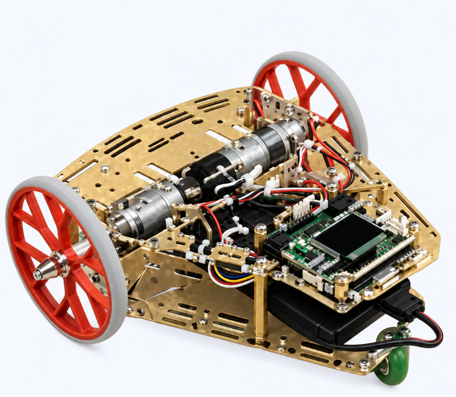
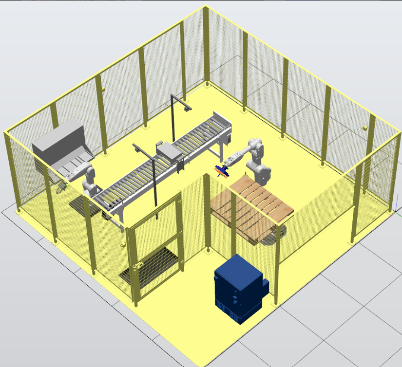
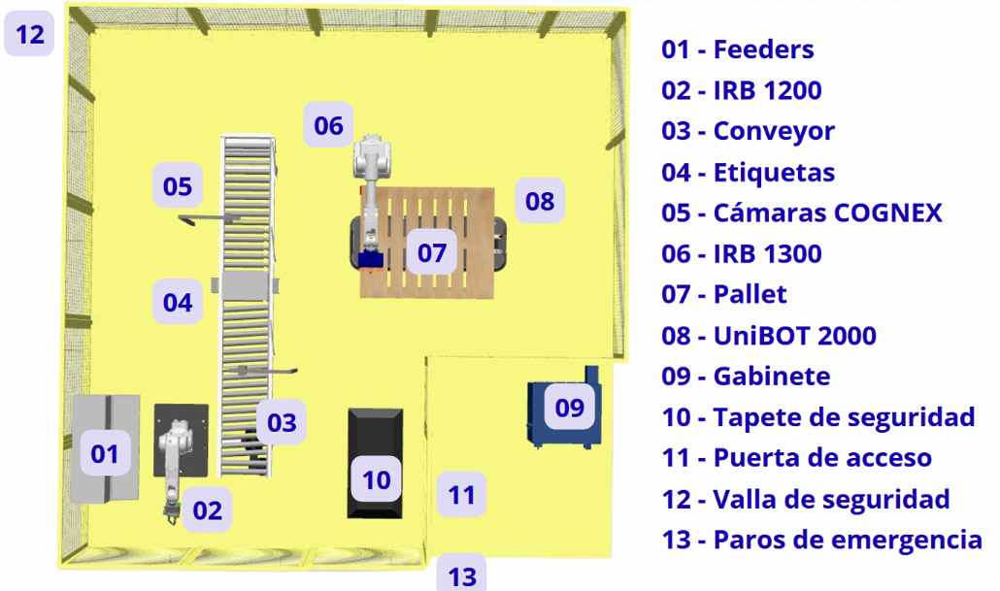

PROJECT OVERVIEW
Developed AutoKit Cell, a proposed packaging and palletizing system integrating two ABB robots, dedicated grippers, two Cognex inspection stations, and conveyor transport. The project included mechanical design, RobotStudio simulation, and financial evaluation.

THE ENGINEERING CHALLENGE
The manual process relied on two technicians, with a reported rate of 0.13 kits per minute. The proposed solution needed to pack 18 kits in under nine minutes, accommodate 240 × 240 × 80 mm boxes, and verify kit contents and labeling.
PROPOSED ROBOTIC CELL
The layout combined a 3 m conveyor, component feeders, packaging and labeling equipment, two robotic arms, and a mobile robot for pallet removal.
- Supply: Feed components and boxes into the packaging area.
- Pack: Place kit components inside the box.
- Inspect contents: Check for missing or incorrectly oriented parts.
- Close and label: Prepare the completed box for identification.
- Verify: Check label presence and QR-code readability.
- Palletize: Stack accepted boxes for removal.

